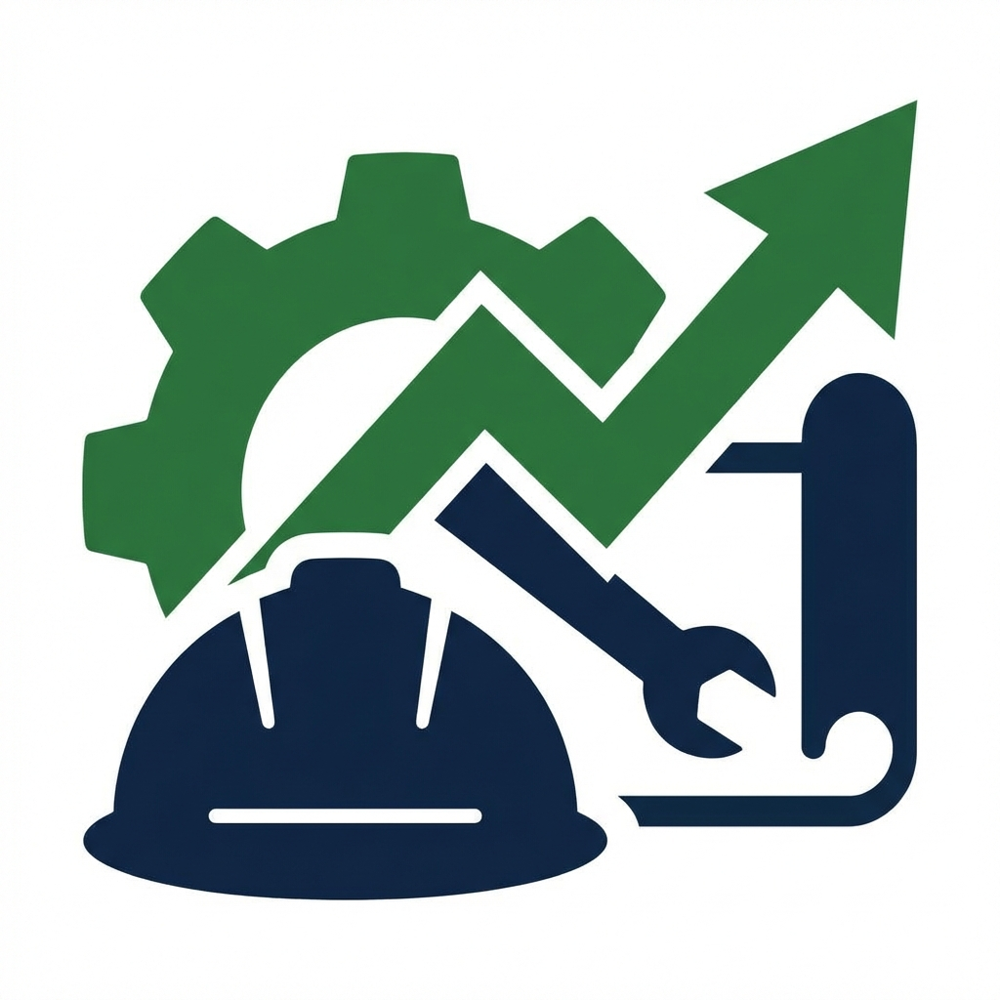
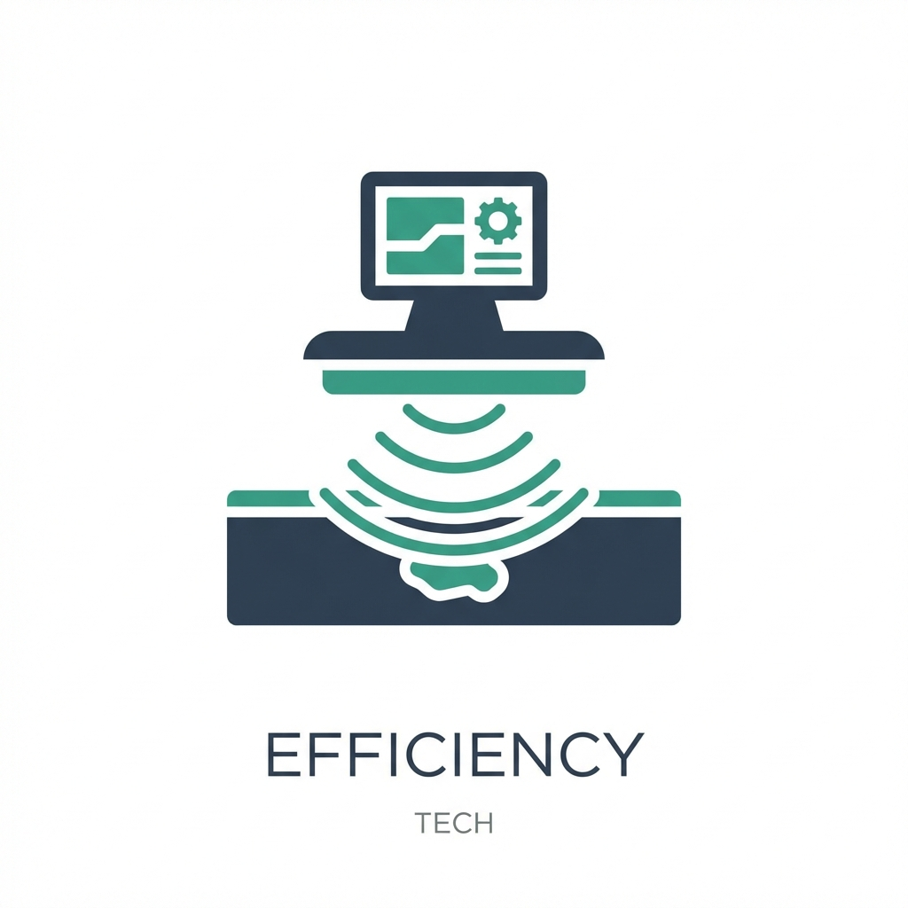
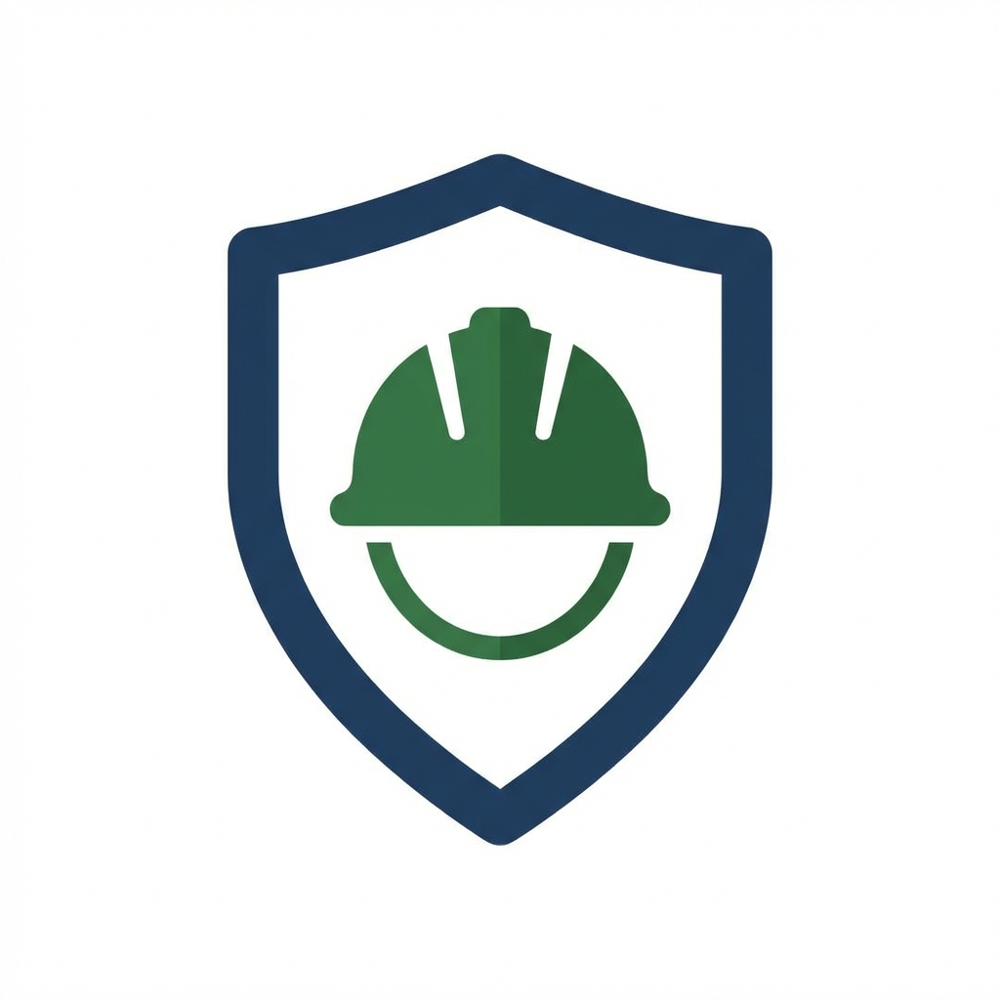
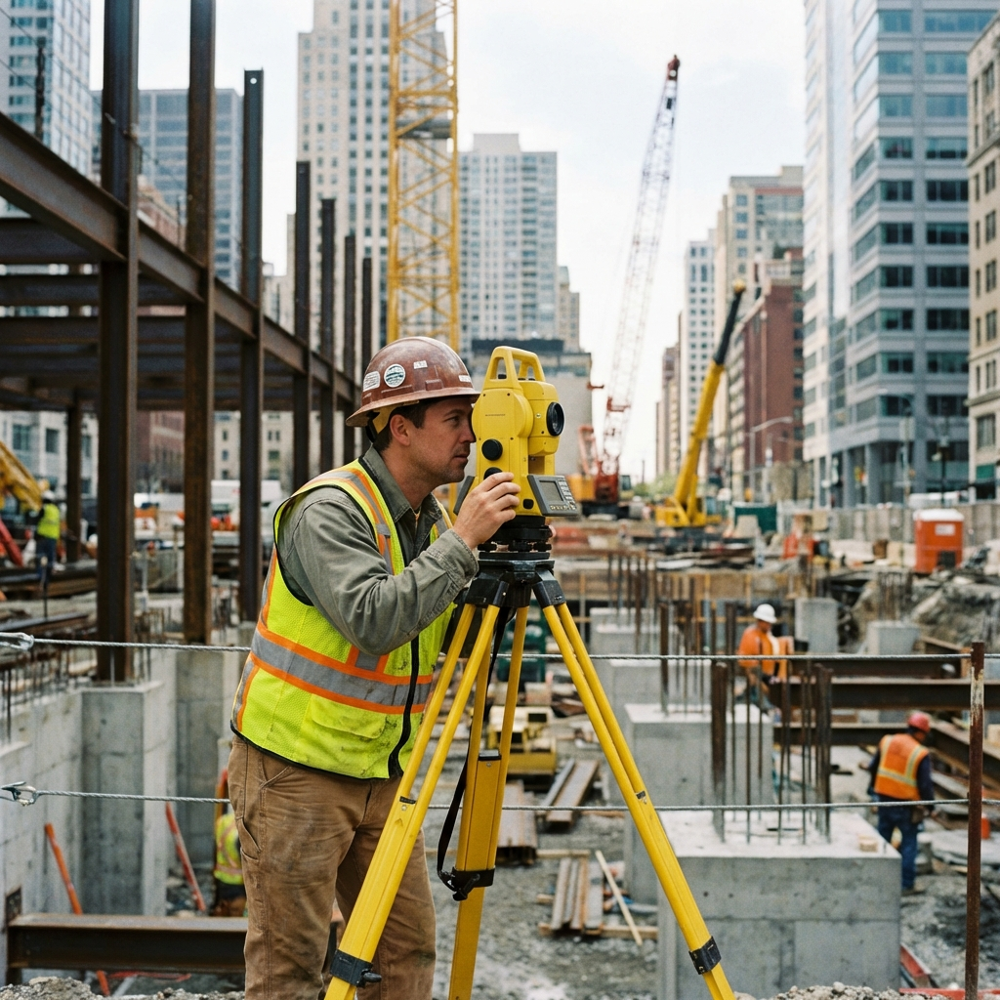
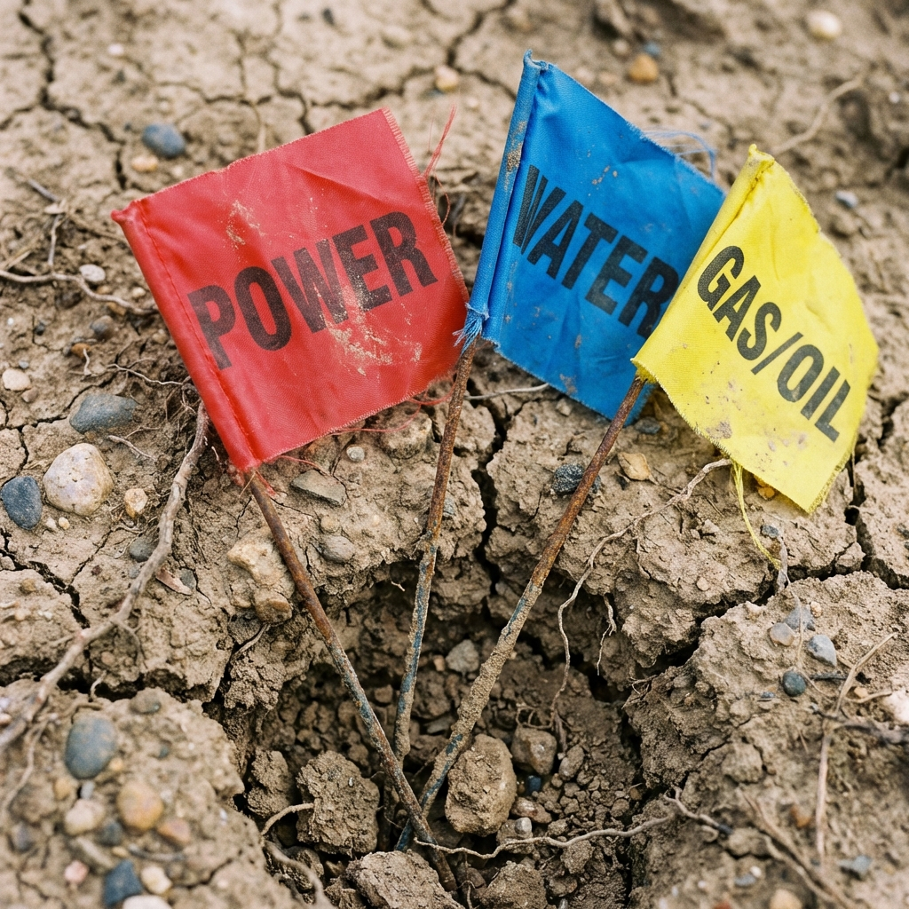

10 Años de Experiencia en Servicios de Detección
Solicitar Presupuesto
Nuestra experiencia es la clave. Optimizamos cada proyecto para garantizar resultados rápidos y precisos.

Utilizamos el mejor equipo del mercado para asegurar la máxima precisión en cada localización.

Nuestro profesionalismo garantiza un entorno de trabajo seguro. Prevenir daños es nuestra prioridad.
Estamos dedicados a proporcionar servicios de detección de utilidades subterráneas de la más alta calidad. Nuestro compromiso con la excelencia y la satisfacción del cliente nos impulsa a mantener los estándares más rigurosos en cada trabajo que realizamos. Entendemos la importancia crítica de evitar daños a la infraestructura y garantizamos la seguridad en cada paso.


El servicio 811 solo marca las líneas de servicios públicos hasta el medidor. Más allá del medidor, las líneas se consideran privadas y son responsabilidad del propietario. Nosotros localizamos esas líneas privadas.
Sí, contamos con equipos especializados como georradares (GPR) que nos permiten detectar materiales no conductivos como el plástico y el concreto.